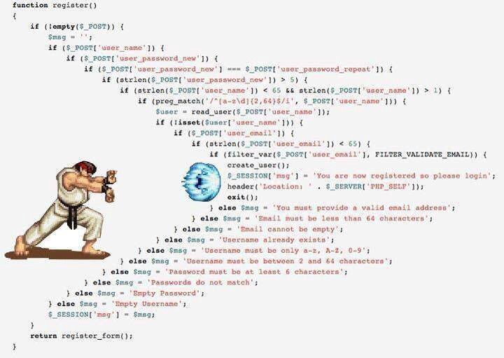

Kotlin Functional Programming II - Monad Transformers
Step inside to understand how to collapse monad stacks into unified types to reduce nesting 👌
If you haven’t read the first part on this series, please do it before reading this. It will help you to understand. Also, this post is a further iteration on that approach.
The problem
Something very well said on the FP world is that monads do not compose. At least not gracefully. They just compose when you return the same monad on all the functions on a call chain, so you can use flatMap or flatten to collapse the stack. But that’s a very unlikely situation.
In a standard scenario you have different concerns at different levels in your architecture, so your functions will most likely return different monads for those levels. That means your stack will end up being deeply nested.
When you get many nested levels on the stack, it starts looking like a pyramid where you need to flatMap and map all the way down the type stack to reach the innermost value. Let’s have a look to one of the snippets in the Monad Stack post.
fun getHeroesUseCase(): Reader<DependencyGraph, IO<Either<CharacterError, List<SuperHero>>>> =
getAllHeroesDataSource().map { io ->
io.map { maybeHeroes ->
maybeHeroes.flatMap { heroes ->
Right(heroes.filter { it.thumbnail.isEmpty() })
}
}
}
We need to map over the Reader returned by the DataSource to get access to the inner IO<Either<CharacterError, List<SuperHero>>>, then we need to map over the IO again to reach the Either, and finally we can flatMap over it to get access to the inner list of heroes.
This happens because we got different concerns encoded here: dependency injection (Reader), pure deferred computations (IO), and typed error handling (Either).
Nesting affects readability, and this approach can exponentially lead to scary scenarios.

Monad comprehensions
When you’re lucky enough to be playing with a single monad in all your composed computations, you can get a huge readability boost by using the Monad Comprehensions, or what in other languages is called Do Notation.
Let’s take a look at this snippet:
data class Country(val id: String, val name: String, val countryCode: String)
data class Address(val id: String, val street: String, val countryId: String)
data class Person(val id: String, val name: String, val addressId: String)
fun loadPerson(id: String): IO<Person> = TODO("IO computation!")
fun loadAddress(id: String): IO<Address> = TODO("IO computation!")
fun loadCountry(id: String): IO<Country> = TODO("IO computation!")
fun getCountryCode(personId: String): IO<String> =
loadPerson(personId).flatMap { person ->
loadAddress(person.addressId).flatMap { address ->
loadCountry(address.countryId).map { country ->
country.countryCode
}
}
}
Here we have 3 IO computations to perform. Each one depends on the result of the previous one, so they’re sequential. That means we must use flatMap (Monad). The only problem is how fast indentation levels grow. We can use monad comprehensions to sugarize that with a nice direct syntax. ArrowFx provides a simple approach to monad comprehensions.
fun getCountryCode(personId: String): IO<String> = fx {
val person = loadPerson(personId).bind()
val address = loadAddress(person.addressId).bind()
val country = loadCountry(address.countryId).bind()
country.countryCode
}
Here we go, we got our nesting resolved gracefully 🎉. bind() essentially allows to flatMap under the hood and extract the inner value so it’s assigned to the left hand side, hence can be used as a requirement for the next line.
Now we can read our asynchronous code as if it was synchronous with this powerful feature from ArrowFx. I’ll write more about it in further posts, so stay tuned!
But remember: we can do this here mainly because we are just playing with a single monad here for all our computations: IO. What happens when we have different nested types as in the first example?
Real world problem
If we get back to the initial snippet:
fun getHeroesUseCase(): Reader<DependencyGraph, IO<Either<CharacterError, List<SuperHero>>>> =
getAllHeroesDataSource().map { io ->
io.map { maybeHeroes ->
maybeHeroes.flatMap { heroes ->
Right(heroes.filter { it.thumbnail.isEmpty() })
}
}
}
Our return type here was highly nested:
Reader<DependencyGraph, IO<Either<CharacterError, List<SuperHero>>>
So there we had our composed Reader computation expecting a context providing the required dependencies to run. When dependencies were provided, unsafe effects wrapped on IO could be run, which would return either an error or a valid list of heroes.
The stack was starting to get a bit complex, therefore readability decreased.
But the monad stack approach is actually incomplete. Functional developers wouldn’t stay there but iterate further. They’d probably use Monad Transformers to solve this problem.
What’s a Monad Transformer?
It’s similar to a regular monad, but it’s not a standalone entity: instead, it modifies the behaviour of an underlying monad.
Most of the monads provided by Arrow have transformer equivalents.
By convention, the transformer version of a monad has the same name followed by a T . For example, the transformer equivalent of State is StateT.
When you need an already existing monad like IO<A> to obtain the capabilities of a different monad like Either<A, B>, you use a transformer.
How do we benefit from it?
By using transformers you remove nesting by collapsing all your return types into a single one that has the same capabilities than all the previous ones by itself.
That means you get rid of the complexity provoked by nested monads, where you are forced to map / flatMap over each level to gain access to the next one in the stack. Since you got all capabilities under the same collapsed type, now you just need to map or flatMap once to access the inner value. That’s all.
Your code becomes simpler thanks to Transformers.

Our deadly machine will be ready soon 🤖
Fixing the stack
Let’s pick the deepest nested types, which would be the following:
IO<Either<CharacterError, List<SuperHero>>>
We have an IO computation wrapping a side effect and making it pure. Inside of it, we got an Either data type, since we want to create a duality in the return type that IO is not supporting by itself. (IO just provides built in support for handling Throwable errors, but we need them strongly typed for our architecture).
To avoid the nesting here, we could gift IO with the code branching powers of Either using the Either Transformer.
Its type is: EitherT<F, A, B>, where F is the underlying monad type (will be IO), A is the left type for the Either and B is gonna be the result type.
For our super heroes example the types would be:
EitherT<ForIO, CharacterError, List<SuperHero>>
ForIO is just the way we use to refer to IO on a generic type slot. So IO is here the underlying monad. That’s part of the boilerplate we automatically generate to emulate higher kinded types in Arrow.
Thanks to EitherT, IO is now capable of retaining typed errors (not just throwables) 🎉.
We could create an alias for it for seamless usage.
typealias EitherIO<A, B> = EitherT<ForIO, A, B>
But the stack is still a bit bigger:
Reader<GetHeroesContext, EitherIO<CharacterError, List<SuperHero>>
Since we’ll have an outer Reader that will set the type for A (List<SuperHero>), we’ll need to use what we call a partially applied type for the inner EitherT.
typealias EitherIO<E> = EitherTPartialOf<ForIO, E>
By using EitherTPartialOf we’re partially applying some of the EitherT generic types (F and E). That means we’ll be fixing both F and E types when this EitherIO<E> gets resolved. We’ll be passing IO and CharacterError to those.
That means we are just leaving the door open for A as a still not applied type, so the Reader can set it.
On top of this, we need to gift the powers of Reader to the already overpowered IO, so it can also provide dependency injection and not just IO deferred computations and typed error handling, which is what we have for the time being.
We can use the Reader Transformer to achieve that: ReaderT<F, D, A>.
F is going to be our brand new EitherIO now, D will be the Reader context containing the program dependencies, and A will be the final result type.
typealias RIO<E, B> = ReaderT<EitherIO<E>, DependencyGraph, B>
That’s the final type we’ll use along our complete architecture. It encodes dependency injection (Reader), typed error handling (Either), and pure deferred execution (IO).
Even if it can still look like nested types, it is indeed a single one with all the required capabilities.
Here’s how the initial algorithm could look like now:
fun getHeroesUseCaseT(): RIO<CharacterError, List<SuperHero>> =
getAllHeroesDataSourceT().flatMap(RIOApi.monadError()) { heroes ->
RIOApi.just(heroes.filter { it.thumbnail.isEmpty() })
}
We’d not need to map twice of three times anymore to reach the inner value, but just a single time. Transformers need some dependencies that need to be provided like in this case the monad. You can build those instances statically as I did here, at least until we provide proper support for typeclasses compile time resolution. If we get that we’ll be able get those automatically injected for you.
Little gotcha:
ReaderTis also calledKleisli. It’s indeed a type alias in Arrow.
typealias ReaderT<F, D, A> = Kleisli<F, D, A>
Kleisli is the abstraction for a computation that requires some dependencies to run and that can run over any context F (which could be IO, Observable, Flowable, Deferred, Flux… etc).
Complete architecture using RIO
Let’s prepare some utilities that will come handy for shortcutting some common behaviors and type inference that we’ll reuse from different places.
object RIOApi {
fun monadError() = EitherT.monadError<ForIO, CharacterError>(IO.monad())
fun <E> raiseError(e: E): RIO<E, Nothing> =
RIO.raiseError(EitherT.monadError<ForIO, E>(IO.monad()), e)
fun <A> just(a: A): RIO<Nothing, A> =
RIO.just(EitherT.applicative<ForIO, Nothing>(IO.applicative()), a)
fun ask() = ReaderT.ask<EitherTPartialOf<ForIO, CharacterError>, DependencyGraph>(monadError())
}
Our program has a dependency on an EitherTMonadError to be able to handle errors, map and flatMap, so I’m shortcutting access to it here.
I’m also providing sugar methods for lifting errors or successful values into our RIO type.
Finally, there’s an ask() method to build up a ReaderT from a given dependency context, so we can implicitly get access to it as we explained in the previous post in the series.
Let’s implement our architecture now. We’ll start in our data layer, where we want to fetch a bunch of heroes from network or return a typed error otherwise.
fun getAllHeroesDataSourceT(): RIO<CharacterError, List<SuperHero>> {
return RIOApi.ask().flatMap(RIOApi.monadError()) { ctx ->
val response = ctx.service.getCharacters()
if (response.isSuccessful) {
val networkHeroes = ctx.gson.deserializeHeroes(response.body)
RIOApi.just(networkHeroes.toDomain())
} else {
when (response.code) {
401 -> RIOApi.raiseError(CharacterError.AuthenticationError)
404 -> RIOApi.raiseError(CharacterError.NotFoundError)
else -> RIOApi.raiseError(CharacterError.UnknownServerError)
}
}
}
}
As we did in previous article, we ask() for a reader to be able to reach the context (ctx) implicitly without the need to pass it as function arguments. Remember Reader is able to implicitly pass program dependencies all the way down the call stack so we don’t need to manually pass them anymore.
Then we fetch heroes and lift valid results or errors into RIO depending on the case. That’s all.
Moving on to the use case now:
fun getHeroesUseCaseT(): RIO<CharacterError, List<SuperHero>> =
getAllHeroesDataSourceT().flatMap(RIOApi.monadError()) { heroes ->
RIOApi.just(heroes.filter { it.thumbnail.isEmpty() })
}
Simple enough. We can flatMap over the result of the DataSource, apply our business logic which is just filtering some heroes in this case, then lift those again into RIO. flatMap requires passing a Monad in Kleisli, since it needs to know how to transform the inner value that is from a type F. Here we’re reusing the MonadError instance we got which is a bit more specific so it’ll suffice. MonadError is a Monad that is also able to handle errors.
Our presentation logic could look like this:
fun getSuperHeroesT(): RIO<CharacterError, Unit> {
return RIOApi.ask().flatMap(RIOApi.monadError()) { ctx ->
getHeroesUseCaseT().map(RIOApi.monadError()) { heroes ->
drawHeroes(heroes, ctx.view)
}.handleError(RIOApi.monadError()) { error ->
drawError(error, ctx.view)
}
}
}
Again, we ask() for a Reader to get access to its context by flatMapping it. We use the context to access the View dependency. We fetch heroes and apply effects depending on the case.
Note that the computation is still deferred, we’re just building our algebras here. We build a declarative stack of computations that we’ll decide to run at some point, but not yet.
Finally, the view implementation would be the edge of the world here. It will enforce the deferred stack to resolve and perform the unsafe effects, like:
fun onResume() {
val dependencies = DependencyGraph(this, HeroesService(), Gson())
val algebra = getSuperHeroesT().run(dependencies)
algebra.value().fix().unsafeRunAsync {}
}
So we got our concern separation very clear here. We have an algebra that is deferred and waiting to be run whenever our dependencies are ready. In the other hand we got the runtime which will stand for:
algebra.value().fix().unsafeRunAsync {}
That’s the moment we’re running the whole call stack and performing the effects.
What about testing?
Testing becomes trivial when you have a reader in place. In our case a reader transformer. You just need to provide a different context implementation that can be providing mocks for the required dependencies.
So you can keep exercising the real production code base and just pass a different context to assert over the whole system execution.
As you’ve notice I’m not using almost any classes here for the program logics, mostly just for the data. My functions are pure and compose the complete architecture. That means you can test the whole system end to end without the need for much mocking, since all the functions are pure and don’t contain any unsafe side effects. The only effects available would be the things you’d want to provide from your Reader context, so you have the power to provide different implementations for those at testing time.
Wrapping up
Remember that you can add me on Twitter to know more about this topic and many more.
If you reached this point you might consider supporting me, 👉here you have a link where you could do it. Really appreciated! 🤗 Getting support or not, I will for sure keep writing and providing content for free ✅
And take a look to the previous post of the series if you still didn’t!
Optimus prime approves this post.